Log the set from your wrist.
FitGymLog is a workout log for Android. Press play on your Galaxy Fit, or tap your Wear OS watch, to complete a set, feel a buzz when rest is over, and load the bar by tapping plates.
Free and open source under the MIT License. Android 13 or newer, tested with a Galaxy Fit3, a Galaxy Z Fold and Wear OS on the emulator. Not on Google Play yet.
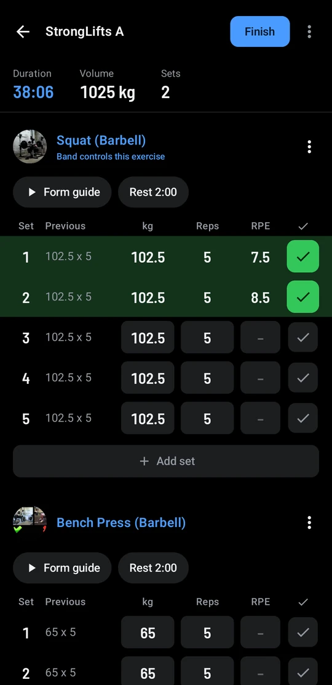
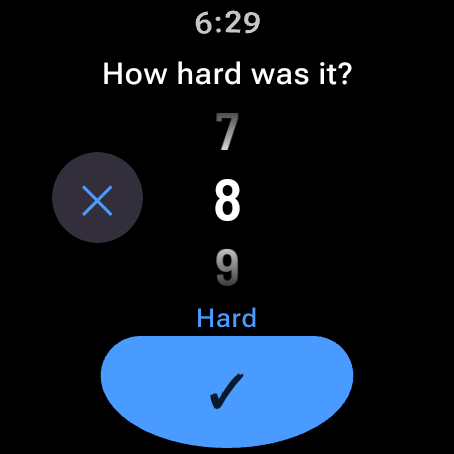
212.5kg
A 20 kg bar and six plates a side. Tap them on and the app adds up the total.
Galaxy Fit: three buttons and a buzz
On a Galaxy Fit3, the band's music controls drive the workout, so the phone can stay in your bag.
The band's music buttons go to whichever app started playing most recently. With YouTube Music, Spotify or a form video playing, presses can switch back and forth between that app and FitGymLog. The rest buzz is a notification, so it always comes through.
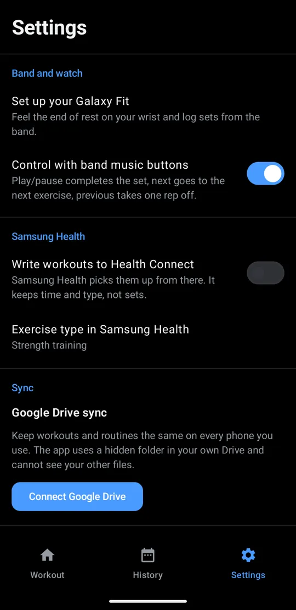
Wear OS watch: the app on your wrist
A Galaxy Watch, Pixel Watch or any other Wear OS watch runs FitGymLog's own watch app, so it needs none of the band's tricks. In Settings, On your wrist, choose Wear OS watch. The phone still keeps the workout, so the watch can't lose a set.
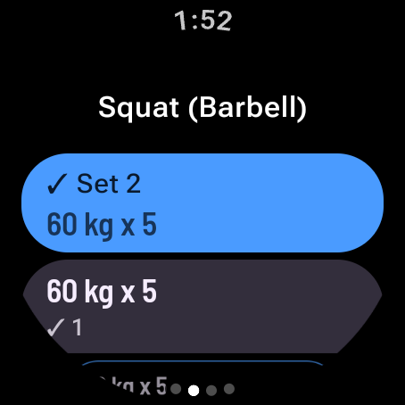
A page for each exercise. One tap logs the next set as planned. 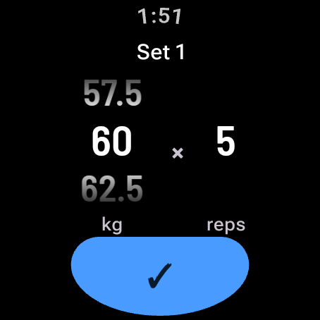
Tap a set for dials, turned by touch or the crown, to log what you actually lifted. 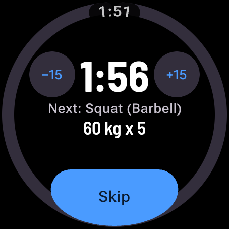
Rest fills the face, with 15-second steps and the next set. Swipe back to see the workout. Finish on the watch and rate how hard it was, 1 to 10, on the crown.
Start a routine and finish the workout from the watch too, then rate how hard it was on the crown. A FitGymLog icon on the watch face takes you back to the workout from anywhere. The rest buzz is the same notification the band gets.
Installing the watch app
Until FitGymLog is on Google Play, the watch app installs over Wi-Fi from a computer with adb. It must come from the same release as the phone app.
- On the watch, open Settings, then System, About, Versions, and tap Build number seven times.
- In Settings, Developer options, turn on Wireless debugging and tap Pair new device.
- On the computer, run
adb pairwith the address and code the watch shows, thenadb connectwith the address under Wireless debugging. - Download
fitgymlog-wear-*.apkfrom the latest release and runadb installwith it.
Load the bar, not a keypad
Tap a plate to put one on each side, or tap a plate on the bar to take it off. Pick a 20, 15 or 10 kg bar (45, 35 or 25 lb), and one switch copies the weight to the sets after this one. Reps come from a number pad.
- 25
- 20
- 15
- 10
- 5
- 2.5
- 1.25
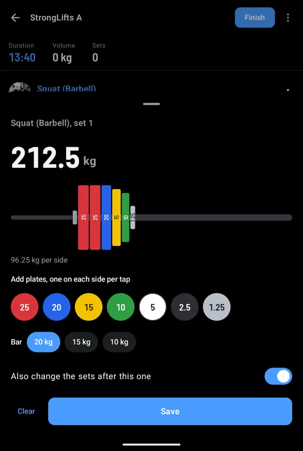
Form check between sets
Squat, bench press, deadlift, overhead press and barbell row come with StrongLifts' videos and written guides. Add a YouTube or web link to any exercise and it shows with its picture and title. Videos play right in the app, or in YouTube if you would rather.
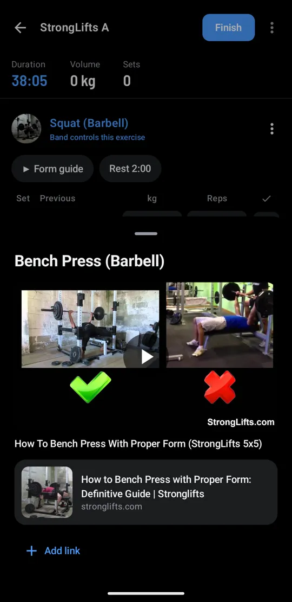
Your weeks, weight and records
Workouts, time or volume for each of the last 12 weeks, and a weight trend that evens out day-to-day swings. On the last evening of each week, a check-in sums up the week against the one before.
Rate how hard each workout felt, 1 to 10, when you finish it or later in History, and Stats shows your training load: a chart of how hard times how long over the last 7 days against your usual week, and whether you are above, about or below it, as Apple Fitness does. Each set also has an RPE column for how many reps you had left, which you can turn off in Settings. The coach sees both.
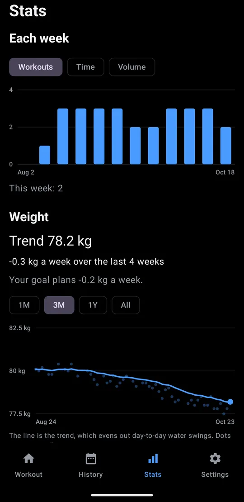
Each week, and your weight trend 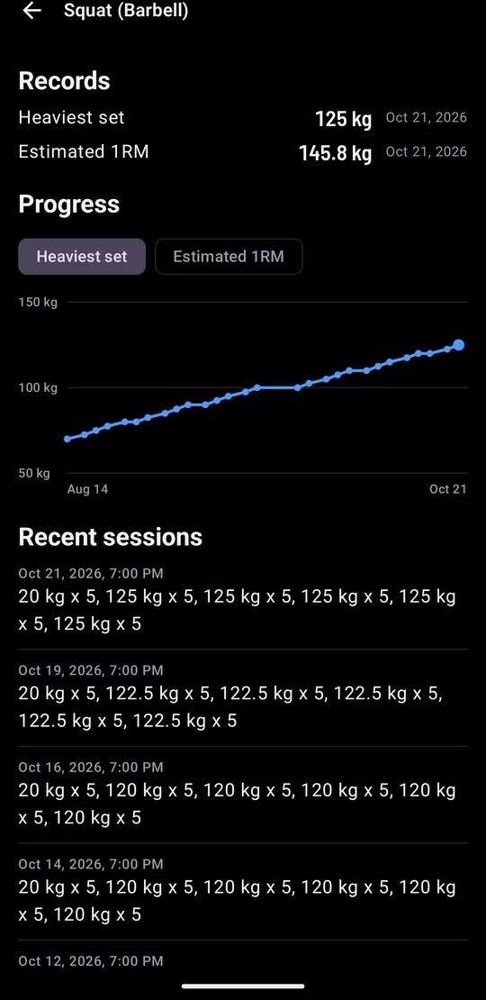
Records for each exercise, with new ones marked in History 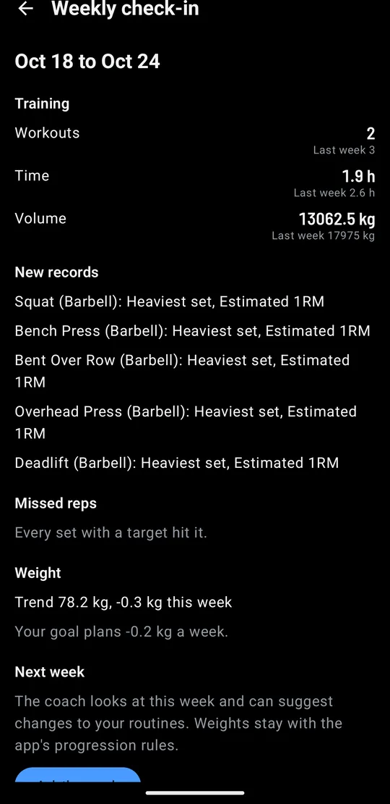
A weekly check-in, and next week's changes from the coach
Attach your InBody, follow every scan
Attach a screenshot of an InBody or smart scale result and the coach reads weight, body fat, skeletal muscle and visceral fat. You check the numbers before they're saved. Each scan is compared with the one before and the first, and your lean mass sets the calorie target.
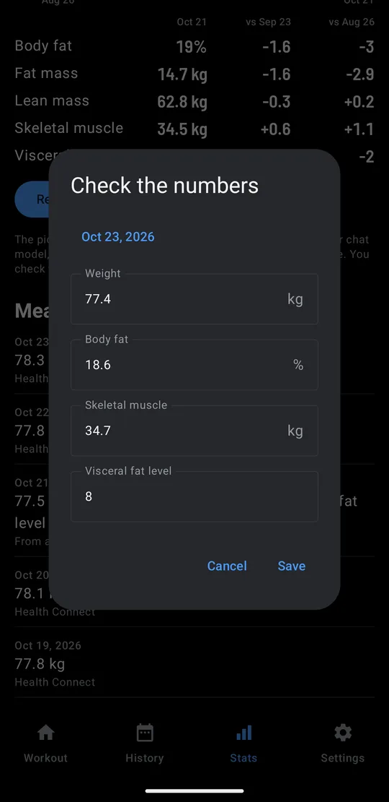
Attach a screenshot, then check what it read 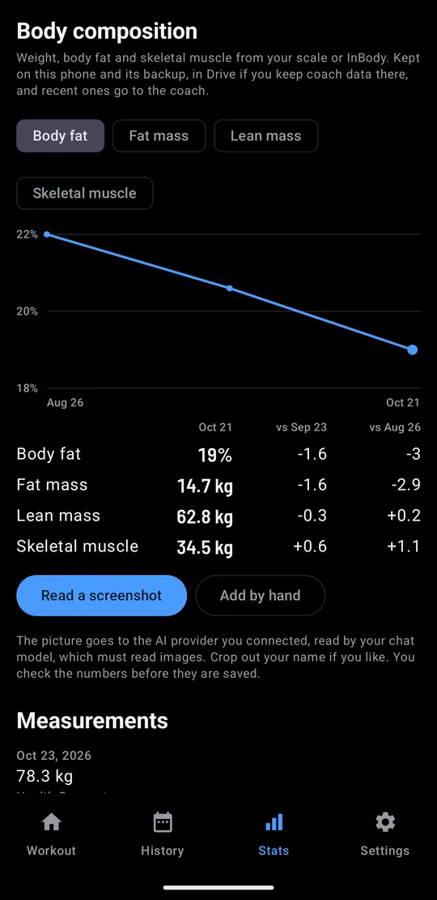
Each scan against the one before and the first 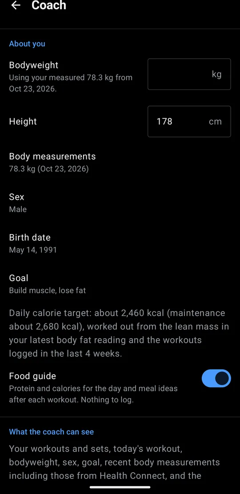
Calories from your lean mass, the way InBody works out BMR
Typing the numbers in works without the coach. Reading a screenshot needs the coach, and the model you connect reads it.
Unfold for two panes
On an unfolded Galaxy Fold, Workout, History and Stats each split into two panes. The done boxes stay at the right edge, under your thumb.
No lock-in. Go back anytime.
Bring your whole Hevy history in with one import. Don't like it? One Strong CSV export, the format Hevy's own importer takes, and you're back in Hevy. Nothing to lose by trying. Strong exports import too.
- Hevy
- Export CSV, then Import
- FitGymLog
- Export Strong CSV
- Hevy
Your sets, weights and reps go both ways.
Set up in five sets
About five minutes. Tick them off as you go.
| Set | What to do | Done |
|---|---|---|
| 1 | Add a routine On the Workout tab, Programs adds StrongLifts 5x5, full body, upper/lower or push/pull/legs. Or build your own with New routine. |
|
| 2 | Allow notifications The end of each rest arrives as a notification. Settings, then Set up your Galaxy Fit, walks you through it. |
|
| 3 | Turn on FitGymLog in Galaxy Wearable In Galaxy Wearable, open Notifications and switch on FitGymLog. Only apps switched on there reach the band. |
|
| 4 | Send a test buzz Tap the test button, then lock your phone. The band should buzz about five seconds later. |
|
| 5 | Optional: Samsung Health and Drive In Settings, turn on Write workouts to Health Connect, and Connect Google Drive to keep two phones in step. |
With a Wear OS watch instead of a band, skip sets 3 and 4: in Settings, set On your wrist to Wear OS watch, and install the watch app as below.
Cardio and ready-made programs
Log the treadmill, the stair machine, the bike or the rower in minutes, with the treadmill's speed and incline or the machine's level, and the rower's distance, and plan them in a routine: 20 minutes at incline 12 is filled in when you start. Each block goes to Samsung Health as its own session, with the treadmill's speed and the distance if you allow them. Start from StrongLifts 5x5, full body, upper/lower or push/pull/legs, or build your own.
A coach for what to lift today
It works from your last three sessions, trims the workout on a busy day and knows how long you've rested. Nothing changes until you tap Apply.
Today's targets
Squat (Barbell)
Knee feels stiff, same as last time
Deadlift (Barbell)
All 5 reps done last time
Short on time today
Fewer squat sets, and bench instead of the treadmill.
Changes to today's workout
Squat (Barbell)
2 sets
Remove Treadmill
Add Bench Press (Barbell)
3 sets, 8 reps
Coach notes
Clean deadlift at 100 kg. If the knee feels fine, add 2.5 kg to the squat next time.
Food for today
Calories today3,010 kcal
Protein145 g
Next meal30 g
- Chicken rice bowl
- Greek yogurt and banana
- Tofu kimchi
On your own key, or your own computer
Off until you turn it on. Then it sends only to the provider you pick, with your own key, or to a model on your own network, such as Ollama or LM Studio, with no key at all. Nothing goes to the developer.
- OpenAI
- Gemini
- Anthropic
- OpenRouter
- Groq
- DeepSeek
- Any OpenAI-compatible address
- Ollama or LM Studio on your network
About what it costs a month
| Model | 3 days a week | Every day |
|---|---|---|
| A model on your own computer | Free | Free |
| Gemini 3.8 Flash, free tier* | Free | Free (daily cap) |
| GPT-6 Luna | $0.01 | $0.02 |
| DeepSeek Flash | $0.01 | $0.03 |
| Claude Haiku 5.5 | $0.01 | $0.03 |
| Gemini 3.8 Flash, paid | $0.10 | $0.25 |
| GPT-6.1 Sol | $0.20 | $0.40 |
| Claude Sonnet 5.5 | $0.20 | $0.45 |
| Claude Opus 5.5 | $0.40 | $0.90 |
| GPT-6 Astra | $0.90 | $2.10 |
| Claude Fable 5.1 | $1.00 | $2.25 |
List prices from each provider on October 22, 2026, in US dollars before tax. Gemini Flash prices double from January 2027, and DeepSeek costs double at peak hours. For comparison, Hevy Pro starts at $2.99 a month.
* Google may use free-tier requests to improve its products, and the free tier can't be used in the EEA, the UK or Switzerland.
How it's worked out
From the app's measured requests: about 2,300 tokens in and 400 out per workout, plus three chat messages a week, or one a day for every-day training.
Your data stays with you
- On your phone
- Workouts live on your phone, and backups and exports are files you keep. No account, no ads, no analytics.
- Samsung Health
- FitGymLog writes every set to Health Connect, and each cardio block as a session of its own. Samsung Health picks them up from there, but it doesn't show the individual sets.
- Google Drive sync, in your Drive
- Optional. One file in a hidden folder of your own Drive keeps your phones in step. The app cannot see your other files.
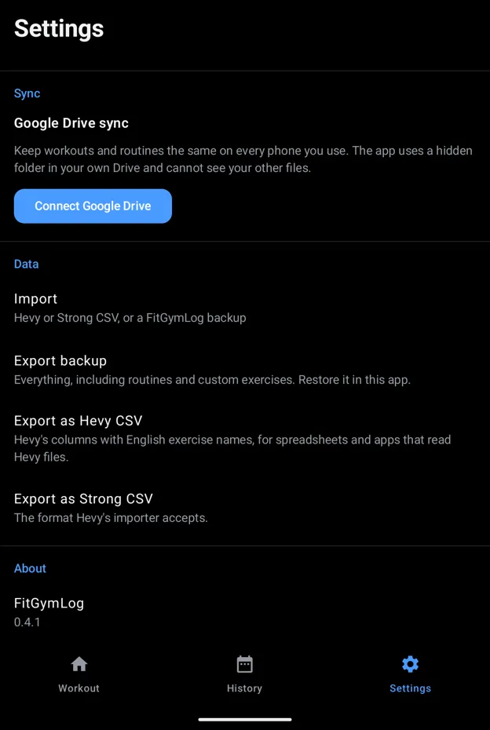
Questions
- Why does the rest time on the band change in five-second steps?
- The time in the title changes every five seconds, so the phone sends the band fewer updates. In between, the ring around the pause button fills as the rest goes by, the way it does for a song.
- Do I need a Galaxy Fit band?
- No. The app logs workouts on its own. The band lets you leave the phone in your bag.
- What does the coach cost?
- Nothing from FitGymLog. You pay your AI provider for what you use, usually a few cents a month; see the coach section. The app works fully without it.
- Does it work with other watches?
- Yes. Any Wear OS watch, such as a Galaxy Watch or Pixel Watch, runs FitGymLog's own watch app: see Wear OS watch. Other bands that control your phone's music and show its notifications may work like the Galaxy Fit, but only the Fit3 has been tested.
Try my other open source projects
QuietBuzz turns off vibration for every app in one tap. Subpair shows two subtitle lines at once on Netflix and Jellyfin. Like FitGymLog, they are free and open source.